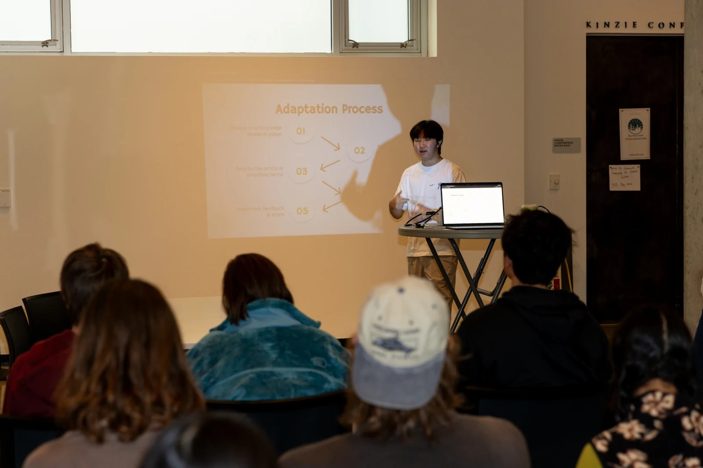

Bringing Research to the Bay Area Youth Climate Summit
IRISTEM brought its research-adaptation process and climate learning activities to young people at the Bay Area Youth Climate Summit.

Photo: ProBonoPhoto.org
Sharing a student-led approach to research
IRISTEM participated in the seventh annual Bay Area Youth Climate Summit on September 27, 2026, at the David Brower Center in Berkeley. The summit brought young people, educators, and climate advocates together for workshops and opportunities to connect around environmental issues. For IRISTEM, the event was a setting to share how student-led research translation can support climate education.
Our presentation introduced the adaptation process behind IRISTEM’s educational materials. Starting with a research paper, the process moves toward an explanation younger learners can understand, then incorporates feedback before the resource is shared. The purpose is to give students a way into scientific ideas that might otherwise remain difficult to access.
Moving from explanation to participation
The workshop paired the presentation with climate learning activities and small-group discussion. A projected climate-costs activity and conversations around tables gave participants ways to engage with the material beyond listening to a presentation. These formats connect with IRISTEM’s broader approach of turning research and environmental questions into things learners can explore together.
An activity creates a different entry point from a technical paper. Students can begin with a question, compare possible answers, and talk through their reasoning. An accessible explanation supplies the background; participation gives learners a reason to use it. Together, those elements can make a complicated subject more approachable without removing the questions that make it worth studying.
Connecting research translation with community learning
IRISTEM’s role was to share its adaptation process and bring educational activities into a youth climate-learning setting. The summit provided a wider community context for that work, placing accessible science education alongside other approaches to climate engagement.
The event illustrates the connection between IRISTEM’s curriculum work and its outreach: research becomes more useful to younger audiences when they have both a clear explanation and an opportunity to engage with it. Presentations, group activities, and discussion offer complementary ways to make that connection.
Event information: Official conference program.